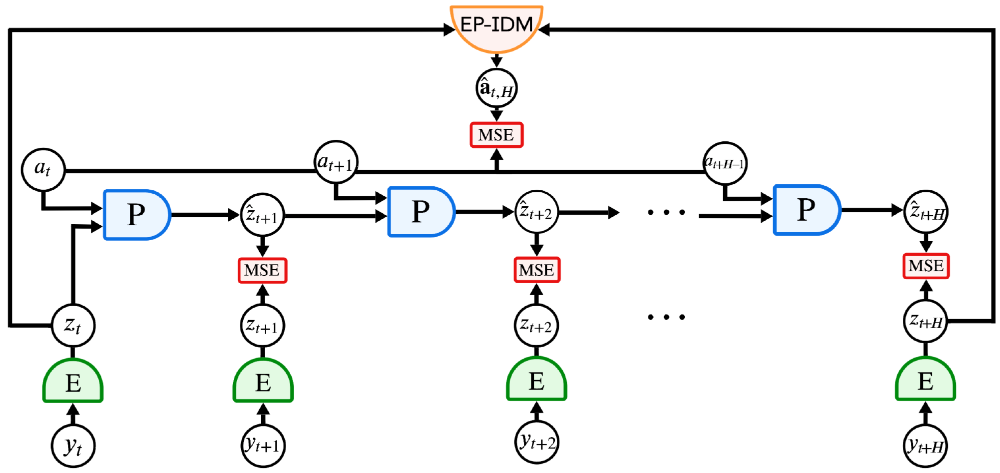
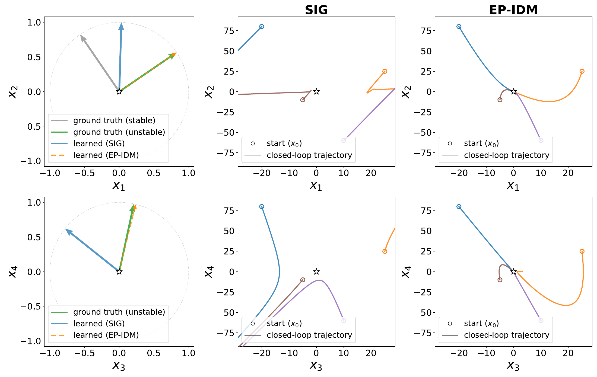
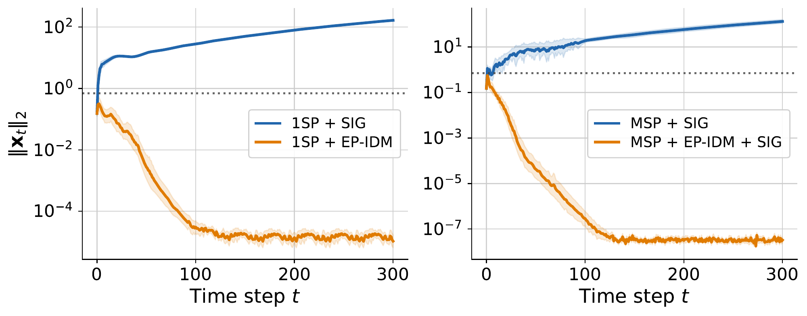
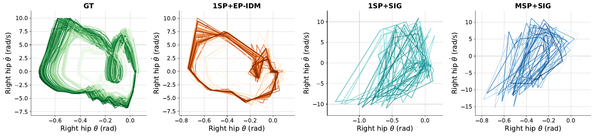
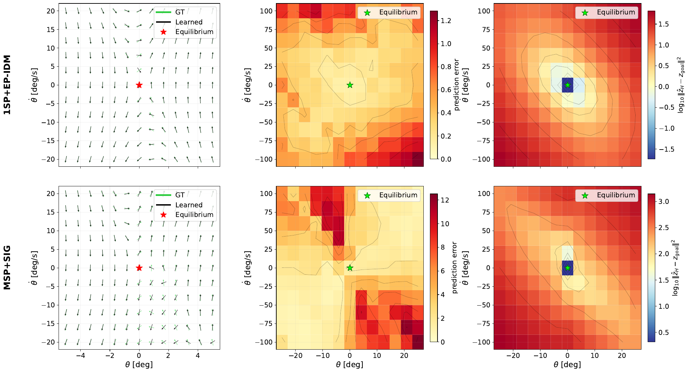
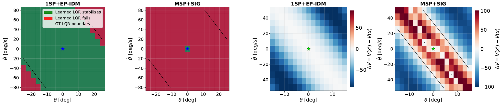

WALKER2D
Preserving a walking gait
Locomotion requires continuous feedback. In the paper’s latent-rollout evaluation, EP-IDM preserves the cyclic structure of the walking gait.
1 Columbia University 2 New York University 3 New York University, AMI Labs
Robotic systems often exhibit unstable modes, along which small perturbations and disturbances can cause unbounded growth unless corrected through feedback. Controlling such systems from high-dimensional visual observations requires representations that preserve these modes. Joint-embedding predictive architectures (JEPAs) provide a natural framework for learning representations and their dynamics from visual data. However, we demonstrate that next step prediction combined with anti-collapse regularization provides no such guarantee: the training loss can be minimized while controllable unstable modes are collapsed, making stabilization from the learned representation impossible. To circumvent this, we augment predictive world-model training with an action reconstruction objective (i.e., an inverse dynamics loss) that encourages control-aware representations, namely, visual representations that preserve crucial features for control. We prove that exact action reconstruction makes the encoder injective on the finite-horizon reachable subspace; hence, no state direction produced by an action sequence within H steps can be discarded. Moreover, as H grows, the dominant eigenspace of the finite-horizon controllability Gramian reveals the controllable unstable subspace. Although our theory considers linear systems, experiments on nonlinear visual control tasks (CartPole, Walker2D, and PointMaze) validate our findings and show the benefits of control-aware representation learning.

At each step, an encoder maps the observation to a latent state, and an action-conditioned predictor rolls out future latent representations. Single- or multi-step prediction losses align these predictions with the encoded ground-truth observations. Endpoint inverse dynamics (EP-IDM) estimates the intermediate action sequence from the initial and final latent states.
Prediction does not guarantee stabilization. In the linear setting, a controller using only the learned latent observations can stabilize the physical system if and only if every unstable or marginally stable mode remains observable through the representation, assuming the physical system is stabilizable and its original observations are observable.
There exist open-loop unstable linear systems and data distributions for which prediction loss and SIGReg are simultaneously minimized while the encoder discards the entire unstable subspace. The representation can remain non-constant and predictable, yet make stabilization from latent observations impossible.

EP-IDM reconstructs the complete action sequence over the prediction horizon from the initial and final latent representations. This objective encourages the encoder to retain action-induced directions that are crucial for control.
THE LINEAR-SYSTEM GUARANTEE
Under the mild assumptions, including sufficiently rich action excitation and exact reconstruction by an affine inverse model, the encoder is injective on the H-step reachable subspace.
No reachable state direction is discarded.
F = WC is the linear state-to-latent map: C maps the physical state to an observation, and W is the linear part of the observation encoder.
ℛH = range([AH−1B, …, AB, B]) is the H-step reachable subspace: the state directions generated by action sequences over H steps. A and B are the system’s state-transition and input matrices.
In the linear-system examples above, endpoint inverse dynamics preserves the unstable direction in latent space, allowing the latent LQR controller to stabilize the physical system.

| Training objective | LQR success | LQR MFS | CEM success | GBP success |
|---|---|---|---|---|
| Ground truth | 100% | 1.000 | 100% | 100% |
| 1SP + SIG | 0% | 0.202 | 100% | 90% |
| MSP + SIG | 0% | 0.247 | 100% | 100% |
| 1SP + EP-IDM | 100% | 0.999 | 100% | 100% |
| MSP + EP-IDM + SIG | 100% | 0.996 | 100% | 100% |
Success: final state norm ≤ 0.7 after 300 steps. MFS: mean fraction of steps within that threshold. 1SP / MSP: one-step / multi-step prediction. SIG: SIGReg. CEM: cross-entropy planning. GBP: gradient-based planning. These are the manuscript’s reported results, not measurements from the videos.
EP-IDM preserves the cyclic structure and range of joint angles and angular velocities, whereas the SIGReg models fail to capture the limit cycle induced by the locomotion policy.



All action-reconstruction variants trained from scratch reach at least 90% CEM success and at least 70% LQR success in the reported PointMaze experiments.
Locomotion requires continuous feedback. In the paper’s latent-rollout evaluation, EP-IDM preserves the cyclic structure of the walking gait.
Small angular disturbances reveal whether the learned representation retains the directions needed for feedback.
Action-reconstruction variants trained from scratch achieve at least 90% CEM success in the reported navigation experiments.